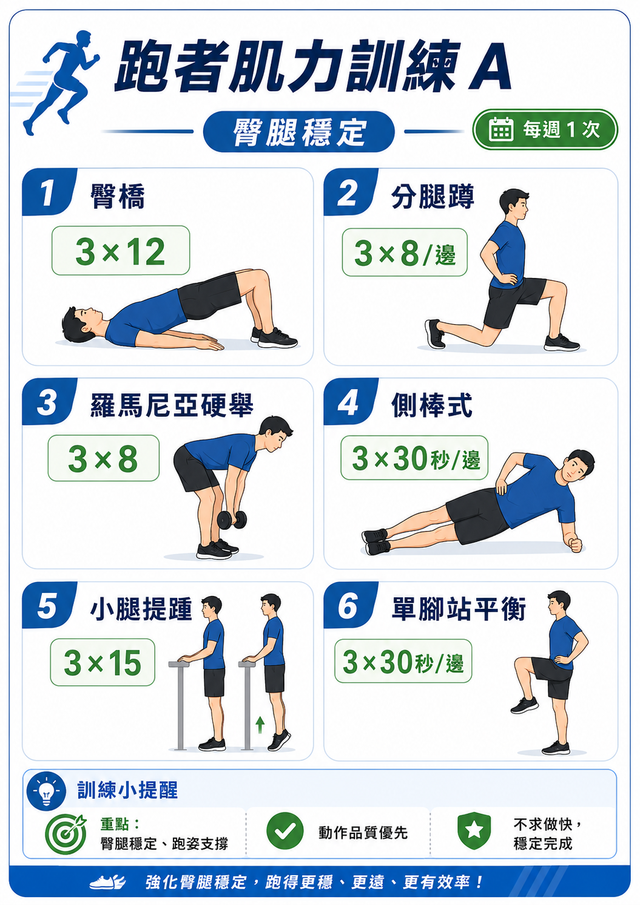
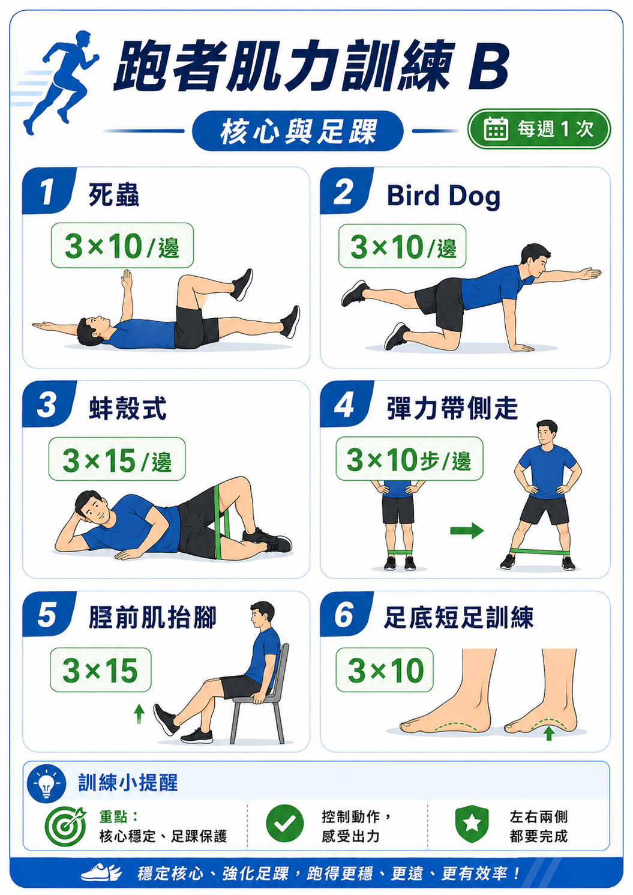

目前瀏覽器拒絕本機儲存，勾選、排序與每週紀錄只能暫時顯示，重新開啟後不會保留。請改用一般視窗或允許此頁使用本機儲存。
Training Handbook
20
20 週半馬重建訓練手冊
這不是衝成績的激進課表，而是一份以左腳穩定、跑步習慣重建、再逐步回到半馬完賽與破 2 可能性的執行手冊。
每日攜帶版
列印手冊版
左腳穩定優先
主要目標安全重建、穩定訓練、逐步回到半馬能力。
日常使用先看首頁與週行事曆，再依左腳規則判斷今天能不能跑。
每週回顧週日做自我檢查與每週紀錄，用數據決定升級、維持或降載。
這本手冊怎麼用
每天先看首頁與本週行事曆，完成後勾選；每週末回到自我檢查與訓練紀錄，決定下週是升級、維持還是降載。
執行順序
- 先確認左腳能不能跑。
- 照本週卡片完成訓練。
- 有異常就取消主課，不補課。
- 週末用紀錄與總結卡做決策。
四個底線
- 前 8 週不追速度。
- 左腳不穩就取消主課。
- 不補課、不硬撐。
- 有異常先降載。
每週最小標準
- 3 次跑步或走跑。
- 2 次肌力或活動度。
- 1 次自我檢查。
- 1 次週紀錄。
目前體態 / 週量181 cm / 約 98 kg / 約 30 km
目標配速半馬 21.1 km，約 5:41/km
列印資訊
手冊索引
這份列印版不是把網頁直接印出來，而是把每日使用、週課表、決策規則與回顧追蹤重新整理成可翻閱的訓練手冊。先知道你現在需要看哪一章，閱讀速度會快很多。
01 Dashboard 與今日流程
02 20 週課表總覽
03 肌力與替代訓練
04 自我檢查與決策規則
05 每週紀錄與趨勢追蹤
06 比賽策略與目標配速
1
先讀主線
首頁 Dashboard、快速使用方式、左腳卡卡規則與配速區間，決定你每天怎麼開始。
2
再讀執行
20 週課表、每週架構、肌力、暖身、行事曆與升降載規則，這些是本手冊的主體。
3
最後讀回顧
每週紀錄、趨勢圖、體重恢復與比賽策略，週末再回來判斷下週是否升級。
建議閱讀順序
- 先讀首頁 Dashboard，知道這週主線。
- 再看一週行事曆，確認今天該做什麼。
- 週末回到自我檢查與每週紀錄做判斷。
列印提醒
- 若用瀏覽器列印，請關閉「頁首與頁尾」。
- 背景圖形與背景色請保持開啟。
- 若要乾淨 PDF，優先使用無頁首頁尾的匯出方式。
每日先看
首頁 Dashboard、左腳規則、週行事曆。
每週固定看
自我檢查、總結卡、趨勢與週紀錄。
賽前再看
測驗週、體重恢復、目標分級與比賽策略。
01
Chapter 1
開始使用與訓練原則
先理解這份手冊的主線，再開始每天照表執行。這一章包含首頁總覽、快速使用方式、左腳風控規則與訓練節奏。
Focus
先穩左腳
前 8 週先求穩定與承載力，不追速度表現。
Read First
每天先看這章
打開手冊先看 Dashboard、快速入口與左腳規則。
Rule
異常先降載
不是週數到了就升，是隔天不更痛才升。
Dashboard
快速使用
左腳規則
配速區間
本章包含
- 首頁 Dashboard 與快速入口。
- 左腳卡卡規則與當日簡化流程。
- 配速區間與計畫總覽。
先記住
- 前 8 週先穩左腳，不追速度。
- 不是週數到了就升，是隔天不更痛才升。
- 有異常先降載，不補課。
閱讀方式
- 每天先看 Dashboard 與今日流程。
- 左腳怪怪的先看可跑、降載、停跑條件。
- 這一章是整份手冊的起點。
這頁是整份訓練系統的快速入口。每天打開時，先看這裡就好。
主訓練原則
80 / 20
80% 輕鬆跑，20% 品質課。
左腳卡卡當日簡化流程
1. 跑前：先做第八章暖身 6–8 分鐘，不熱身不開跑。
2. 暖身後：疼痛 0–3/10 可輕鬆跑；4/10 以上改快走或休息。
3. 跑中：越跑越卡就停止；熱開後改善才完成輕鬆跑。
4. 跑後：做收操，隔天若更痛，下次降載或停跑。
02
Chapter 2
20 週課表與能力建立
從重建期、基礎期到專項期，把課表、每週架構、肌力和暖身收操放在同一段，列印時更像真正的訓練章節。
Build
只升一個變數
不要同時加里程和強度，先讓身體適應。
Support
肌力不是附屬
臀腿、核心與足踝穩定，是保護左腳的底盤。
Routine
暖身後再決定
跑前先暖身，再判斷今天能不能進入跑步課。
20 週課表
每週架構
肌力 / 平替
暖身收操
本章包含
- 20 週課表分期與每週架構。
- 肌力訓練、平替動作、暖身與收操。
- 從重建到專項的能力建立順序。
執行重點
- 只升一個變數，不同時加里程和強度。
- 肌力與活動度是保護左腳的基礎，不是附屬品。
- 暖身做完再決定今天能不能跑。
本章節奏
- 先看分期，再看每週架構。
- 肌力、平替與暖身收操一起讀。
- 這章負責建立能長期訓練的底盤。
這份文件的使用順序：
先看左腳規則
→
照週數跑課表
→
每週做 2 次肌力
→
每週日自我檢查
→
異常就降載
最重要：前 8 週不要追速度。你現在的主線是把左腳與身體承載力救回來。
每週最小可執行版本
| 項目 | 最低標準 |
|---|
| 跑步 | 每週 3 次，全部輕鬆跑或走跑混合 |
| 肌力 | 每週 2 次，A/B 各一次 |
| 暖身 | 跑前至少 6 分鐘 |
| 收操 | 跑後 8–10 分鐘 |
| 檢查 | 週日勾選自我檢查表，有 2 項異常就降載 |
1
先決定今天能不能跑
跑前先看左腳狀態，疼痛超過 4/10 或跑姿改變就不要硬跑。
2
照週行事曆執行
不要每天重新思考，直接依照第 11 章的一週行事曆完成。
3
每週日做自我檢查
如果有 2 項以上異常，下週降載 20–30%，品質課改輕鬆跑。
4
每週填訓練紀錄
記錄週跑量、疼痛、睡眠與體重，讓下一週決策有依據。
你現在不是不能練破 2，而是目前不能直接用破 2 的強度硬練。前 8 週重點是讓左腳穩定、恢復跑感、建立身體承載力。
核心順序：左腳穩定 → 規律跑步 → 週跑量回到 30 km → 長跑拉到 14–16 km → 加入節奏跑 → 半馬配速測試 → 決定是否挑戰破 2。
| 階段 | 週數 | 目標 | 重點 |
|---|
| 第 1 階段：重建期 | 第 1–4 週 | 左腳穩定、恢復跑步習慣 | 走跑混合、輕鬆跑，不追配速、不追跑量 |
| 第 2 階段：基礎期 | 第 5–8 週 | 建立有氧基礎，週跑量回到 25–30 km | 輕鬆跑、短加速、長跑 9–12 km |
| 第 3 階段：能力建立期 | 第 9–12 週 | 加入輕度品質課，長跑拉到 14–16 km | 法特雷克、穩定跑、提高心肺與閾值 |
| 第 4 階段：半馬專項期 | 第 13–16 週 | 建立半馬配速耐受度 | 節奏跑、半馬配速短段落、長跑 16–18 km |
| 第 5 階段：比賽準備期 | 第 17–20 週 | 長跑 18–20 km、減量、比賽 | 保留腳感、降低疲勞、完成半馬 |
可以跑的情況
- 跑前微卡，但熱身後改善。
- 跑中不惡化。
- 跑後隔天沒有更痛。
- 疼痛感 1–3/10，且不改變跑姿。
要降載或停跑的情況
- 跑中越跑越卡。
- 疼痛超過 4/10。
- 隔天明顯更痛。
- 因疼痛導致跛行或代償。
- 單點刺痛、壓痛、腫脹。
左腳卡卡期間，不做間歇、不做衝刺、不做坡跑、不做高強度。身體穩定優先。
| 類型 | 配速 | 感覺 | 使用時機 |
|---|
| 走跑混合 | 不看配速 | 能聊天、不硬撐 | 第 1–2 週、左腳不穩時 |
| 輕鬆跑 E | 7:10–8:10/km | 非常輕鬆、可聊天 | 前 8 週主力 |
| 長跑 L | 7:20–8:30/km | 慢、穩、能完成 | 長跑日 |
| 穩定跑 M | 6:20–6:50/km | 稍喘但可控 | 第 9 週後少量加入 |
| 節奏跑 T | 5:55–6:15/km | 有壓力但可維持 | 第 13 週後 |
| 半馬配速 HMP | 5:40–5:50/km | 比賽目標強度 | 第 15 週後短距離測試 |
第 1–4 週：重建期
| 週數 | 週跑量 | 重點 | 長跑 / 最長訓練 |
|---|
| 第 1 週 | 12–16 km | 走跑混合 3 次 | 45–55 分鐘走跑 |
| 第 2 週 | 15–18 km | 輕鬆跑 3 次 | 6–7 km |
| 第 3 週 | 18–22 km | 長跑到 7–8 km | 7–8 km |
| 第 4 週 | 14–18 km | 降載週，確認左腳狀態 | 6–7 km |
第 1–4 週細節
- 第 1 週：二 走 5 分 + 跑 3 分 / 走 2 分 × 6；四 走 5 分 + 跑 4 分 / 走 2 分 × 5；日 走跑 45–55 分。
- 第 2 週：二 4–5 km；四 5 km；日 6–7 km。
- 第 3 週：二 5 km；四 6 km；日 7–8 km。
- 第 4 週：二 4–5 km；四 5 km；日 6–7 km。
第 5–8 週：基礎期
| 週數 | 週跑量 | 長跑 | 重點 |
|---|
| 第 5 週 | 22–24 km | 9 km | 恢復連續跑 |
| 第 6 週 | 24–26 km | 10 km | 加入短加速 |
| 第 7 週 | 26–30 km | 11–12 km | 穩定跑量 |
| 第 8 週 | 22–24 km | 9–10 km | 降載 |
短加速：4–6 組 × 15–20 秒放鬆加速，每組中間慢走或慢跑 60–90 秒。這不是衝刺，只是讓跑姿放順。
第 9–12 週：能力建立期
| 週數 | 週跑量 | 品質課 | 長跑 |
|---|
| 第 9 週 | 30–32 km | 6 × 2 分鐘稍快 | 12 km |
| 第 10 週 | 32–34 km | 3 km 穩定跑 | 13–14 km |
| 第 11 週 | 34–36 km | 2 × 2 km 穩定跑 | 15 km |
| 第 12 週 | 28–30 km | 降載，無硬課 | 12 km |
第 13–16 週：半馬專項期
| 週數 | 週跑量 | 品質課 | 長跑 |
|---|
| 第 13 週 | 36–38 km | 4 km 節奏跑 | 16 km |
| 第 14 週 | 38–40 km | 3 × 2 km 節奏跑 | 17 km |
| 第 15 週 | 40–42 km | 半馬配速 5 km | 18 km |
| 第 16 週 | 32–34 km | 降載 | 14 km |
第 17–20 週：比賽準備期
| 週數 | 週跑量 | 重點 |
|---|
| 第 17 週 | 42–44 km | 長跑 19 km |
| 第 18 週 | 38–40 km | 半馬配速 6–8 km 測試 |
| 第 19 週 | 30–32 km | 減量 25% |
| 第 20 週 | 18–24 km + 比賽 | 保持腳感，完成半馬 |
| 星期 | 安排 | 說明 |
|---|
| 一 | 休息 / 活動度 | 恢復優先 |
| 二 | 品質課 / 輕度節奏 / 走跑 | 依階段調整，前期不做硬課 |
| 三 | 輕鬆跑 + 肌力 A | 臀腿穩定 |
| 四 | 休息 / 核心 | 左腳不穩時改完全休息 |
| 五 | 節奏跑 / 半馬配速跑 / 輕鬆跑 | 第 13 週後才進入專項 |
| 六 | 輕鬆跑 / 快走 / 交叉訓練 | 不追配速 |
| 日 | 長跑 | 耐力建立，慢到能完成 |
你說得對，肌力訓練這一段用圖像更清楚。以下直接改成圖卡版，方便你一眼對照動作、組數與次數。
建議頻率：每週 2 次，每次 25–35 分鐘。
安排方式：肌力 A 做 1 次 ＋ 肌力 B 做 1 次。
左腳不舒服時，請先追求動作品質，不要急著加重或做太快。
肌力 A｜臀腿穩定
重點：臀橋、分腿蹲、羅馬尼亞硬舉、側棒式、小腿提踵、單腳站平衡。

肌力 B｜核心與足踝
重點：死蟲、Bird Dog、蚌殼式、彈力帶側走、脛前肌抬腳。

更新提醒：這張原始圖卡右下角寫的是「足底短足訓練」。
但依照前面調整，實際執行時請改用更好上手的 「腳趾抬起 3 × 15」。
如果時間不多，最低完成標準
- 一週至少做 2 次肌力。
- 每次至少做 4–6 個動作。
- 先做臀腿穩定，再做核心與足踝。
- 動作品質優先，不求做到爆。
左腳卡卡時的肌力原則
- 做完後不可以更痛。
- 若單腳動作不穩，可先扶牆或縮短時間。
- 若分腿蹲或單腳平衡會痛，先降幅度。
- 若腳底短足抓不到感覺，直接用腳趾抬起取代。
原本的「足底短足訓練」太細、太難抓感覺，直接改成更好上手的腳趾抬起。
原本：足底短足訓練 3 × 10
更新後：腳趾抬起 3 × 15
- 坐著或站著都可以。
- 腳掌平放地上。
- 腳跟不要離地。
- 前腳掌不要離地。
- 只把五根腳趾往上抬。
- 維持 1–2 秒。
- 放下。
- 做 3 組 × 15 次。
做對的感覺
- 小腿前側、腳背附近有一點出力。
- 腳跟穩穩貼地。
- 前腳掌沒有翹起。
- 動作簡單、可控制、不疼痛。
不要這樣做
- 不要整隻腳掌都翹起。
- 不要用力到腳底抽筋。
- 不要身體晃來晃去代償。
- 左腳有刺痛時不要硬做。
你提醒得對，這一段本來就有示意圖，應該直接整合在本章節，這樣查閱最直覺。下面改成「表格 + 圖卡」一起看。
跑前 6–8 分鐘動態暖身
| 動作 | 次數 / 時間 |
|---|
| 腳踝繞圈 | 30 秒 / 邊 |
| 小腿動態伸展 | 10 次 / 邊 |
| 髖關節繞圈 | 10 次 / 邊 |
| 弓箭步轉體 | 8 次 / 邊 |
| 原地高抬腿 | 30 秒 |
| 原地小跳 | 20 秒，無痛再做 |
重點：跑前先把腳踝、髖部、核心與步態喚醒。若左腳當天卡卡，暖身做完再決定要不要跑。
暖身後狀態記錄
如果這頁還有空間，可以直接記下今天暖身完的腳感與是否照原計畫跑。
跑後 8–10 分鐘收操放鬆
| 動作 | 次數 / 時間 |
|---|
| 小腿伸展 | 45 秒 / 邊 |
| 臀肌伸展 | 45 秒 / 邊 |
| 髂脛束周邊放鬆 | 1–2 分鐘 |
| 足底按摩 | 1–2 分鐘 |
重點：跑後不是做越多越好，而是把容易緊的部位放鬆。若左腳或足底偏緊，先小腿與足底優先。
執行順序建議：跑前暖身 → 跑步訓練 → 跑後收操。
如果左腳在暖身後還是越來越卡，當天就不要硬上主課。
這一章已把「跑者每週自我檢查圖卡」與「互動檢查工具」整合在一起。你平常可以先看圖卡快速確認，再用右側互動勾選做真正紀錄。
自我檢查圖卡
每週日檢查一次；若有 2 項以上異常，下一週直接降載 20–30%。
快速使用方式：先看圖卡 → 再勾選右邊互動檢查 → 看系統建議
執行原則：0 項異常 → 照計畫／1 項異常 → 保守觀察／2 項以上異常 → 下週降載 20–30%。
03
Chapter 3
每週執行、決策與替代訓練
這一章是實際每天要打開看的核心：本週行事曆、升降載判斷、替代訓練與補給原則。
Daily Use
直接看今天卡片
不必每天重讀整份手冊，直接照今天這張做。
Decision
疼痛高就取消
超過 3/10 或跑姿改變，主課改休息或替代訓練。
Fuel
長跑重點是耐力
補水與補給在訓練中先練，不要到比賽才測試。
週行事曆
升降載決策
替代訓練
補給 / 水分
本章包含
- 一週行事曆與完成度追蹤。
- 升級、維持、降載決策系統。
- 替代訓練與補給 / 水分規則。
使用方式
- 每天直接看今天卡片，不需要重讀整份手冊。
- 疼痛超過 3/10 或跑姿改變，主課直接取消。
- 長跑日的目的是耐力，不是證明速度。
當週目標
- 先完成，再談漂亮。
- 需要調課時，以恢復與安全為優先。
- 這章是每天最常翻開的一段。
這區是給你每天打開直接看的版本。勾選狀態會存在目前瀏覽器本機，不會上傳。
這 7 張卡可以直接拖曳排序，也可以用每張卡上的前後按鈕微調。順序會記在目前瀏覽器本機。
本週完成度
--/-- - --/--
0 / 7
今天：等待日期同步
--/-- 週一
休息 / 活動度 15 分鐘
重點：恢復優先，不補課、不硬跑。
--/-- 週二
走跑混合 / 輕鬆跑
前期不做硬課；左腳卡就改快走。
--/-- 週三
輕鬆跑 + 肌力 A
臀腿穩定，動作品質優先。
--/-- 週四
休息 / 核心 / 活動度
左腳不穩時，這天直接完全休息。
--/-- 週五
輕鬆跑 / 穩定跑
第 13 週後才逐步進入節奏與 HMP。
--/-- 週六
輕鬆跑 / 快走 / 交叉訓練
當作恢復量，不要跑成主課。
--/-- 週日
長跑，慢到能完成
長跑重點是耐力，不是證明速度。
本週若自我檢查有 2 項以上異常，請把週二、週五主課都改成輕鬆跑或休息，週日長跑降 20–30%。
這一版補上最重要的風控：不是週數到了就升級，而是身體達標才升級。
進入下一階段條件
| 階段 | 可以升級的條件 | 不達標時 |
|---|
| 第 1–4 週 → 第 5–8 週 |
左腳跑中不惡化、跑後隔天不更痛、可連續跑 6–8 km、週跑 3 次穩定。 |
重複第 3–4 週，不急著加量。 |
| 第 5–8 週 → 第 9–12 週 |
週跑量穩定 25–30 km、長跑可完成 10–12 km、短加速後無疼痛。 |
維持基礎期，再練 1–2 週。 |
| 第 9–12 週 → 第 13–16 週 |
可完成 14–15 km 長跑、輕度品質課後隔天不明顯疲勞或疼痛。 |
品質課減半，長跑維持不增加。 |
| 第 13–16 週 → 第 17–20 週 |
可完成 16–18 km 長跑、半馬配速 5 km 不爆、左腳狀態穩定。 |
比賽目標改 B/C 目標，不硬追破 2。 |
疼痛決策樹
可跑
疼痛 0–3/10
處理：照原課表，但只跑輕鬆強度。
觀察 / 降載
疼痛 4/10 或跑姿怪怪的
- 跑前就明顯不舒服。
- 跑中沒有變好。
- 隔天有點惡化。
處理：取消品質課，改快走、飛輪或休息。
停跑 / 就醫
刺痛、腫脹、跛行
- 單點刺痛或壓痛。
- 腫脹、發熱。
- 休息後仍越來越痛。
處理：停止跑步，建議看復健科、骨科或物理治療。
紅旗警訊
若出現以下狀況，不建議繼續照課表跑：單點刺痛、壓某一點會明顯痛、腫脹或發熱、跑姿明顯改變、休息後仍越來越痛、早上起床第一步明顯疼痛、疼痛持續超過 7–10 天。
左腳不舒服時，不一定只能完全休息。可以用低衝擊方式維持心肺，但品質課要直接取消。
| 原課表 | 替代方案 | 備註 |
|---|
| 輕鬆跑 5 km | 快走 40–50 分鐘 | 心率維持可聊天，不要競走。 |
| 長跑 10 km | 飛輪 / 橢圓機 60–75 分鐘 | 維持 Zone 2，避免腿部衝擊。 |
| 節奏跑 / HMP | 取消，改輕鬆飛輪 40–50 分鐘 | 受傷風險高時不補品質課。 |
| 間歇 / 短加速 | 取消，改活動度 + 肌力 | 左腳卡卡期間不要衝。 |
| 單腳肌力會痛 | 改雙腳版本或縮小幅度 | 分腿蹲可改半蹲或扶牆。 |
替代訓練的目的不是變強，而是「不中斷習慣，又不讓左腳惡化」。
長跑到 75 分鐘以上，就要開始練補給。比賽當天不要第一次嘗試新東西。
| 情境 | 建議 |
|---|
| 跑步 60 分鐘內 | 通常水即可。 |
| 跑步 75 分鐘以上 | 開始練能量膠或等量碳水補給。 |
| 長跑前 2–3 小時 | 正餐，碳水為主，避免太油。 |
| 跑前 15 分鐘 | 少量水，不要一次灌太多。 |
| 跑中每 20 分鐘 | 少量補水。 |
| 跑中 45–60 分鐘 | 可補一包能量膠或等量碳水。 |
長跑補給要在訓練中測試腸胃反應；比賽日只使用已經測過、沒有問題的補給。
每 4 週做一次小測，不是為了硬拚，而是判斷是否能升級。
| 週數 | 測驗 | 用途 | 判斷 |
|---|
| 第 4 週 | 連續跑 6–8 km | 確認左腳是否穩定 | 隔天不更痛才進基礎期。 |
| 第 8 週 | 長跑 10–12 km | 確認基礎期是否完成 | 可控完成才加品質課。 |
| 第 12 週 | 3–5 km 穩定跑 | 確認能否進專項 | 穩定跑後無疼痛再進 T 課。 |
| 第 16 週 | HMP 5 km | 確認是否能往破 2 靠 | 不爆才保留 A 目標。 |
| 第 18 週 | HMP 6–8 km | 決定 A/B/C 目標 | 依測試結果調整比賽配速。 |
第 4 週
連續跑 6–8 km
確認左腳是否穩定。隔天不更痛，才算能進基礎期。
第 8 週
長跑 10–12 km
確認基礎期是否完成。可控完成後，才考慮加入品質課。
第 12 週
3–5 km 穩定跑
確認能否進專項。穩定跑後無疼痛，再進 T 課。
第 16 週
HMP 5 km
確認是否能往破 2 靠。不爆，才保留 A 目標。
第 18 週
HMP 6–8 km
依測試結果決定 A/B/C 目標，並調整比賽配速。
測驗原則
- 前一天不要補強度。
- 睡眠與補水先到位。
- 暖身做足再開始。
- 未通過就回前一階段再穩 1–2 週。
測驗結果手寫欄
如果這頁剛好有空間，直接把最近一次測驗結果與下週調整先記在這裡，列印版會更像真正可帶著走的手冊。
04
Chapter 4
追蹤紀錄與回顧調整
把週跑量、疼痛、睡眠、體重與決策放在一起讀，這章負責判斷你要升級、維持還是降載。
Review
每週只看重點
跑量、疼痛、睡眠、體重四個指標就夠你做決策。
Judge
先看恢復再看進步
疼痛上升或睡眠下降時，不要勉強維持表面里程。
Next Week
用數據定方向
這章不是記流水帳，而是替下週做取捨。
週紀錄
總結卡
趨勢圖
決策回顧
本章包含
- 每週訓練紀錄表。
- 總結卡與趨勢圖。
- 用數據判斷下週方向。
判讀邏輯
- 疼痛升高、睡眠下降、長跑占比過高時先降載。
- 連續穩定 1–2 週，才考慮升級。
- 恢復期先求穩，不求每週都進步。
回顧方式
- 每週日固定填一次，避免只靠感覺。
- 先看趨勢，再決定下週升級或維持。
- 這章是你調整課表的證據來源。
05
Chapter 5
體重恢復與比賽策略
最後一章集中處理體重、恢復、比賽目標與配速分級，讓列印版收尾更像完整手冊。
Recovery
先穩訓練再談減重
恢復期不追激烈降重，先保住訓練穩定性。
Race Plan
配速要服從狀態
目標分級不是面子，而是根據身體狀態分流。
Finish
安全完賽優先
左腳不穩時，A 目標立刻降級也完全合理。
體重恢復
配速分級
目標策略
比賽收尾
本章包含
- 體重恢復節奏與飲食原則。
- 半馬目標分級與比賽配速。
- 保守完賽與挑戰破 2 的分流策略。
最後原則
- 恢復期不要激烈減重，先保住訓練穩定。
- 比賽策略要服從身體狀態，不服從自尊。
- 左腳不穩時，A 目標立刻降級也沒關係。
收尾重點
- 先把體重與恢復節奏穩住。
- 再依第 18 週測試結果決定 A/B/C 目標。
- 最後目標是健康完賽，不是賭一場。
體重策略
20 週內不要激烈減重。比較穩的是每週下降 0.3–0.6 kg，20 週約下降 6–10 kg。
- 如果能從 98 kg 降到 90–92 kg，跑步體感會差很多。
- 不要一邊重練、一邊吃太少，左腳更容易出問題。
飲食原則
- 蛋白質：每天約 130–160 g。
- 品質課與長跑前後不要把碳水砍太兇。
- 減少炸物、含糖飲料、宵夜。
- 長跑日不要空腹硬跑。
- 減重速度不要超過每週 0.8 kg。
目標分級
| 目標 | 成績 | 條件 |
|---|
| A 目標 | 1:59:xx | 第 18 週可穩定完成 HMP 6–8 km |
| B 目標 | 2:03–2:08 | 長跑穩定，HMP 稍硬 |
| C 目標 | 2:10–2:20 | 左腳偶爾卡，但可安全完賽 |
| 保守目標 | 完賽 | 左腳狀態不穩 |
第 18 週測試判斷
測試格式：熱身 2 km → 半馬配速 6–8 km → 放鬆 1–2 km
| 狀況 | 結論 |
|---|
| 5:41/km 很可控 | 可以挑戰破 2 |
| 5:50/km 可控 | 比賽目標設 2:03–2:06 比較穩 |
| 6:00/km 已經很硬 | 先以完賽與 2:10 內為目標 |
| 左腳又開始卡 | 放棄破 2，保守完賽 |
狀態很好：挑戰破 2
| 距離 | 配速 |
|---|
| 0–5 km | 5:48–5:52/km |
| 5–15 km | 5:38–5:43/km |
| 15–18 km | 5:35–5:40/km |
| 18–21.1 km | 有餘力再推 |
狀態普通：跑 2:05 左右
| 距離 | 配速 |
|---|
| 0–5 km | 6:05/km |
| 5–15 km | 5:55–6:00/km |
| 15–21.1 km | 維持不爆 |
如果左腳還是不穩：前 10 km 完全保守，10–16 km 看左腳狀況，16 km 後能穩就穩。任一時間疼痛升高，就降速或退賽。
這次不要帥，要穩。前 8 週不要追速度，先把身體修好；第 12 週後再看能不能往破 2 靠近。
最終使用邏輯：Dashboard 決定今天方向 → 行事曆執行 → 自我檢查控風險 → 訓練紀錄追蹤趨勢。
左腳穩定
→
規律跑步
→
週跑量回 30 km
→
長跑 14–16 km
→
加入節奏跑
→
HMP 測試
→
決定目標
賽前一天檢查
- 不要補主課，只做輕鬆活動與放鬆。
- 睡眠、補水、裝備與號碼布先準備好。
- 左腳若已經不穩，隔天目標直接降級。
比賽當天原則
- 前段保守，不要一開始就追配速。
- 任一時間疼痛升高，就降速或退賽。
- 安全完賽比硬賭破 2 更重要。
穩定訓練，安全進步，你一定可以把半馬重新跑起來。
收尾頁｜帶著走的使用提醒
這份列印版已經整理成可翻閱、可手寫、可週週回顧的訓練手冊。真正每天最常用的是首頁、行事曆、自我檢查與每週紀錄。
最常翻的三頁
- 首頁 Dashboard：先判斷今天能不能照表操課。
- 一週行事曆：直接看今天卡片，不重讀整本。
- 每週紀錄：用數據決定升級、維持或降載。
最後原則
- 疼痛升高、跑姿改變、隔天惡化，就不要硬撐。
- 先求穩定完成，再求配速漂亮。
- 安全完賽比勉強追破 2 更重要。
最後備註
可以把賽前提醒、當前腳感，或下次最想優化的地方先寫在這裡。